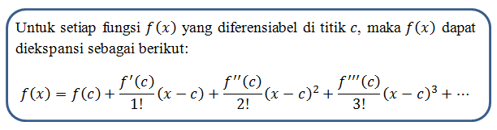

Welcome di Komputasi Numerik
Kesalahan dalam Perhitungan Numerik (Error)
Kesalahan
Dalam Analisis Numerik kita dapat mengkarakterisasi kesalahan dalam pengukuran dan perhitungan sehubungan dengan keakuratan dan ketepatannya
Hubungan antara hasil yang tepat dan perkiraan dapat dirumuskan sebagai :
nilai sebenarnya = aproksimasi + kesalahan
^-^ kesalahan absolut atau benar (Et) :
Et= nilai sebenarnya - perkiraan
^-^ kesalahan relatif ( εtεt) :
εt= nilai sebenarnya - perkiraannilai asli
ada beberapa macam kesalahan yaitu :
A. Kesalahan pembulatan terjadi karena komputer tidak dapat mewakili jumlah secara tepat.
Ada dua sisi utama kesalahan pembulatan sering terlibat dengan perhitungan numerik.
a. Komputer memiliki batas ukuran dan presisi pada angka yang dapat mereka simpan dan hitung.
b. Perhitungan numerik tertentu sangat sensitif terhadap kesalahan pembulatan. Ini bisa dari struktur matematika perhitungan serta bagaimana komputer melakukan operasi.
B. Kesalahan pemotongan muncul ketika Anda menggunakan perkiraan menggantikan ekspresi yang tepat dalam prosedur matematika. Salah satu contoh kesalahan pemotongan yang terbaik (dan sering digunakan) adalah pendekatan Taylor Series dari suatu fungsi.
DEFINISI MACLAURIN
Suatu fungsi f(x) yang memiliki turunan
,
,
, dan seterusnya yang kontinyu dalam interval
dengan
maka untuk
disekitar
yaitu
,
dapat diekspansi kedalam Deret TaylorDefinisi.
Berikut algoritma dari maclaurin

Dengan algoritma diatas kita dapat menyerderhanakannya sebagai berikut:

berikut contoh implementai dari maclaurin
f(x)= e2x $$ f(x)≈1+2x \displaystyle+\frac{{{{f}^{{\text{}}}{\left({2x^2}\right)}}}}{{{3}!}} \displaystyle+\frac{{{{f}^{{\text{}}}{\left({2x^3}\right)}}}}{{{3}!}} \displaystyle+\ldots+… $$
sekarang kita masukan misal x=0 $$ f(0)≈1+2(0) \displaystyle+\frac{{{{}^{{\text{}}}{\left({2(0)^2}\right)}}}}{{{3}!}} \displaystyle+\frac{{{{}^{{\text{}}}{\left({2(0)^3}\right)}}}}{{{3}!}} \displaystyle+\ldots+… $$
jadi ketika x =0 maka hasil akan tetap 1 mekipun banyak suku dan literasi
Listing Program
membuat program supaya dapaat mengekspansi bilangan e^2x dengan nilai x=4 hingga nilai menjadi kurang dari 0,001 bisa dengan listing program sebagai berikut.
import math
coba = 1
a = 0
b = 1
x = int(input("masukkan x = "))
while coba> 0.001:
f_x = 0
f_y = 0
for i in range(a):
f_x += (2**i)*x**i/math.factorial(i)
for j in range(b):
f_y += (2**j)*x**j/math.factorial(j)
print("suku ke ", a, "=", f_x)
print("suku ke ", b, "=", f_y)
coba = f_y-f_x
a+=1
b+=1
print("selisih sukunya = ", coba)
output:
masukkan x = 1
suku ke 0 = 0
suku ke 1 = 1.0
selisih sukunya = 1.0
suku ke 1 = 1.0
suku ke 2 = 3.0
selisih sukunya = 2.0
suku ke 2 = 3.0
suku ke 3 = 5.0
selisih sukunya = 2.0
suku ke 3 = 5.0
suku ke 4 = 6.333333333333333
selisih sukunya = 1.333333333333333
suku ke 4 = 6.333333333333333
suku ke 5 = 7.0
selisih sukunya = 0.666666666666667
suku ke 5 = 7.0
suku ke 6 = 7.266666666666667
selisih sukunya = 0.2666666666666666
suku ke 6 = 7.266666666666667
suku ke 7 = 7.355555555555555
selisih sukunya = 0.08888888888888857
suku ke 7 = 7.355555555555555
suku ke 8 = 7.3809523809523805
selisih sukunya = 0.025396825396825307
suku ke 8 = 7.3809523809523805
suku ke 9 = 7.387301587301587
selisih sukunya = 0.006349206349206327
suku ke 9 = 7.387301587301587
suku ke 10 = 7.3887125220458545
selisih sukunya = 0.0014109347442676778
suku ke 10 = 7.3887125220458545
suku ke 11 = 7.388994708994708
selisih sukunya = 0.0002821869488531803